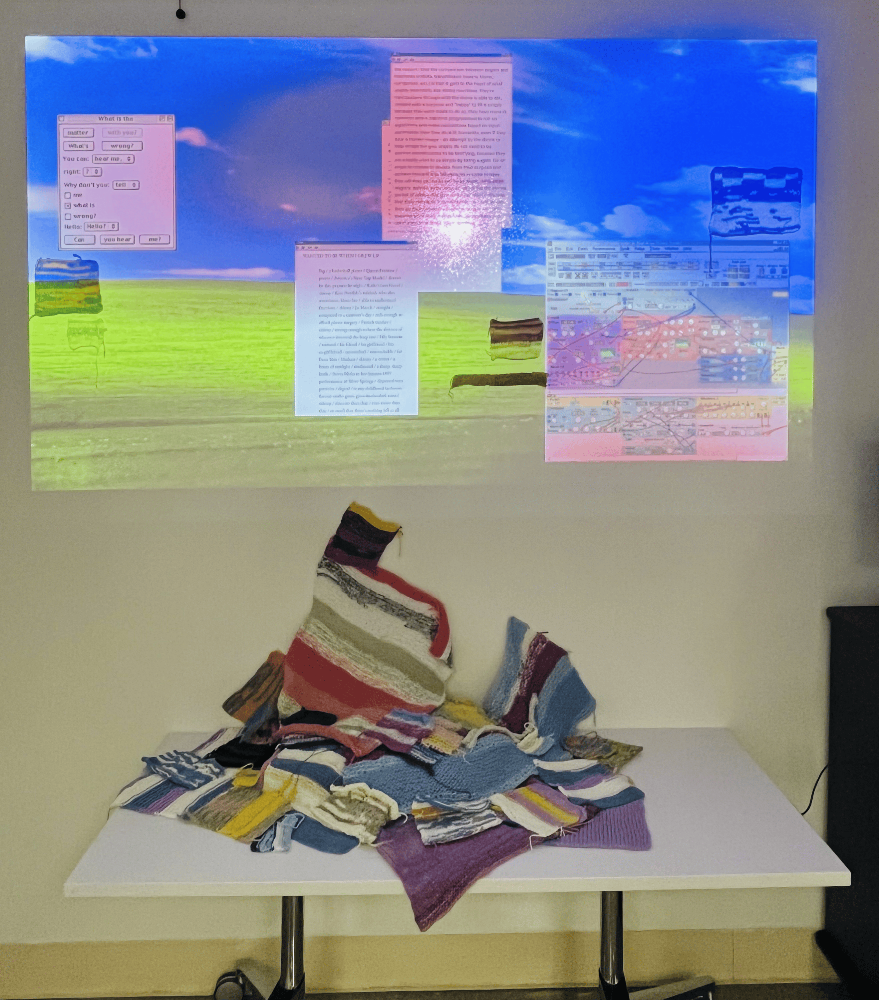
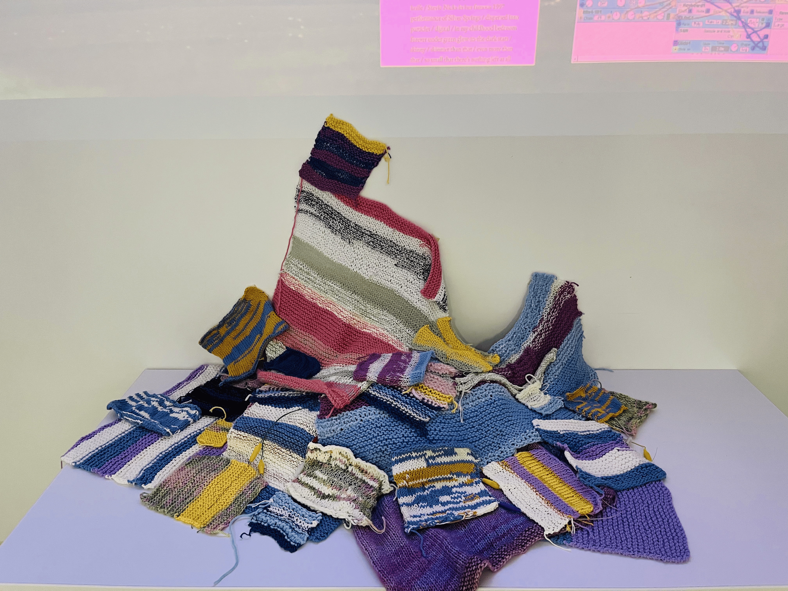

Physical Installation — Sensor-Based
the grounding of touch + digital connection
A personal commentary on my experiences with knitting and poetry — an interactive installation exploring how care, intention, and the desire to connect manifest through both tactile and digital experiences.
Participants are invited into a space where knitted textiles become touch-sensitive instruments, triggering projected poems, glitchy visuals, and evolving soundscapes. The interaction is both sensory and emotional: touching the textile reveals and distorts fragments of text — some my own, some collected from strangers — turning the act of touching into a quiet exchange.
The installation blurs the boundaries between the physical and the virtual, positioning the visitor not just as a viewer, but as a co-creator. Through this shared space, the work offers an experience of slowing down, of noticing, of feeling the presence of something made with love and care.
Background + Inspiration
Knitting, for me, is a language of care and attention. Each loop and stitch holds time, presence, and intention. Similarly, poetry — both written and online — feels like digital intimacy: a stranger's voice reaching across space and time to say, I feel this, too.
I drew inspiration from the deep metaphorical overlap between text and textile — from meter and rhythm in poetry to the mathematical precision of knitting patterns. This piece reflects my personal urge to connect, to offer something precious, and to create a space where others can feel seen, even if briefly.
Installation Elements
A collection of hand-knit textile pieces — visually varied, embedded with sensors — invite visitors to touch, hold, and interact. Each gesture evokes a visual and sonic response, manipulating fragments of poems in real time. A responsive projection system overlays words, colors, and distortions onto surfaces: touching the textile might trigger a poem to unravel, glitch, or reassemble, echoing the emotional texture of the gesture.
The space is filled with evolving audio — soft distortions, murmured poems, and the sound of knitting needles at work. Select poems are also translated into knitting patterns, exploring how meter and line breaks might become rows and stitches.
Technical Approach
Touch sensors embedded in the textiles via Arduino detect pressure, movement, and presence. TouchDesigner receives the sensor data and drives real-time projection mapping and audio response. Poems — my own and sourced online — are fragmented and recombined live using generative text algorithms for structural and textual manipulation.
Documentation — Textile Interaction
Installation Close-Up


Documentation — Projection Response